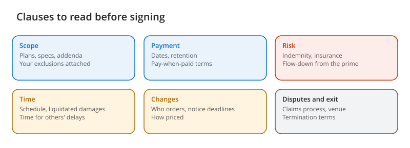

Contracts and subcontracts: clauses to read before you sign
In one sentence: the contract decides who carries which risk, so read the clauses that move money and liability before you sign, and get legal advice on the ones you don't understand.

Clauses to read every time
| Clause | What to look for |
|---|---|
| Scope | Plans, specs and addenda listed; your exclusions attached |
| Price and payment | Billing dates, retention, how long to pay |
| Pay-when-paid / pay-if-paid | Whether you get paid only if the GC is paid; California law limits pay-if-paid clauses |
| Indemnity | How far you must defend and pay for others' claims; California limits some forms |
| Insurance | Limits, additional insured, waiver of subrogation, primary and noncontributory |
| Schedule and damages | Liquidated damages, delay damages, and whether you get time for others' delays |
| Changes | Who can order changes, notice deadlines, how they're priced |
| Disputes | Notice, claims process, mediation, arbitration, venue |
| Termination | For cause and for convenience; what you're paid |
| Flow-down | Which prime contract terms pass to you; get a copy of the prime contract |
Public works
On public jobs, many terms come from statute and the agency's standard specifications, and some subcontract clauses are limited by California law. See What makes a job public works in California and Claims and disputes on public contracts.
Your own subcontracts
When you hire subs, use a written subcontract template reviewed by an attorney, with scope, insurance, schedule, safety, payment and change terms. A written subcontract with a licensed sub is also one of the conditions for treating them as a subcontractor. See Employment basics in California.
Negotiating
Mark up what you can't accept and explain why. Many GCs accept reasonable changes to indemnity, insurance or damages when asked.
PM notes
Make a one-page summary of each contract (dates, notice deadlines, retention, damages, insurance) and give it to the PM and the foreman.
Common mistakes
- Signing without the prime contract the subcontract refers to.
- Missing a notice deadline for a change or delay.
- Agreeing to insurance terms your policy doesn't provide.